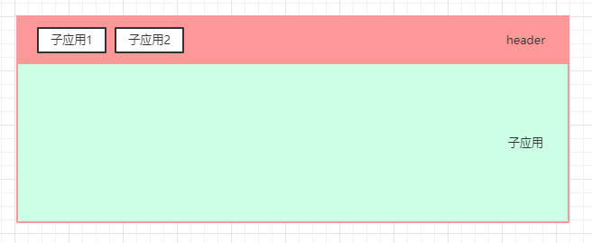
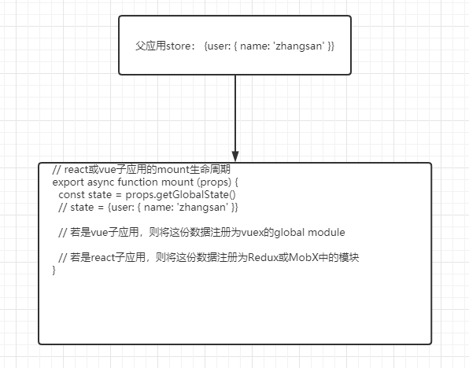
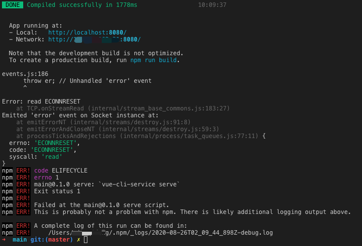

最近负责的新项目用到了qiankun，写篇文章分享下实战中遇到的一些问题和思考。
示例代码： https://github.com/fengxianqi/qiankun-example。
在线demo：http://qiankun.fengxianqi.com/
单独访问在线子应用：
为什么要用qiankun
项目有个功能需求是需要内嵌公司内部的一个现有工具，该工具是独立部署的且是用React写的，而我们的项目主要技术选型是vue，因此需要考虑嵌入页面的方案。主要有两条路：
iframe方案qiankun微前端方案
两种方案都能满足我们的需求且是可行的。不得不说，iframe方案虽然普通但很实用且成本也低，iframe方案能覆盖大部分的微前端业务需求，而qiankun对技术要求更高一些。
技术同学对自身的成长也是有强烈需求的，因此在两者都能满足业务需求时，我们更希望能应用一些较新的技术，折腾一些未知的东西，因此我们决定选用qiankun。
项目架构
后台系统一般都是上下或左右的布局。下图粉红色是基座，只负责头部导航，绿色是挂载的整个子应用，点击头部导航可切换子应用。

参考官方的examples代码，项目根目录下有基座main和其他子应用sub-vue，sub-react，搭建后的初始目录结构如下：
├── common //公共模块
├── main // 基座
├── sub-react // react子应用
└── sub-vue // vue子应用基座是用vue搭建，子应用有react和vue。
基座配置
基座main采用是的Vue-Cli3搭建的，它只负责导航的渲染和登录态的下发，为子应用提供一个挂载的容器div，基座应该保持简洁（qiankun官方demo甚至直接使用原生html搭建），不应该做涉及业务的操作。
qiankun这个库只需要在基座引入，在main.js中注册子应用,为了方便管理，我们将子应用的配置都放在：main/src/micro-app.js下。
const microApps = [
{
name: 'sub-vue',
entry: '//localhost:7777/',
activeRule: '/sub-vue',
container: '#subapp-viewport', // 子应用挂载的div
props: {
routerBase: '/sub-vue' // 下发路由给子应用，子应用根据该值去定义qiankun环境下的路由
}
},
{
name: 'sub-react',
entry: '//localhost:7788/',
activeRule: '/sub-react',
container: '#subapp-viewport', // 子应用挂载的div
props: {
routerBase: '/sub-react'
}
}
]
export default microApps
然后在src/main.js中引入
import Vue from 'vue';
import App from './App.vue';
import { registerMicroApps, start } from 'qiankun';
import microApps from './micro-app';
Vue.config.productionTip = false;
new Vue({
render: h => h(App),
}).$mount('#app');
registerMicroApps(microApps, {
beforeLoad: app => {
console.log('before load app.name====>>>>>', app.name)
},
beforeMount: [
app => {
console.log('[LifeCycle] before mount %c%s', 'color: green;', app.name);
},
],
afterMount: [
app => {
console.log('[LifeCycle] after mount %c%s', 'color: green;', app.name);
}
],
afterUnmount: [
app => {
console.log('[LifeCycle] after unmount %c%s', 'color: green;', app.name);
},
],
});
start();在App.vue中，需要声明micro-app.js配置的子应用挂载div（注意id一定要一致），以及基座布局相关的，大概这样：
<template>
<div id="layout-wrapper">
<div class="layout-header">头部导航</div>
<div id="subapp-viewport"></div>
</div>
</template>
这样，基座就算配置完成了。项目启动后，子应用将会挂载到<div id="subapp-viewport"></div>中。
子应用配置
一、vue子应用
用Vue-cli在项目根目录新建一个sub-vue的子应用，子应用的名称最好与父应用在src/micro-app.js中配置的名称一致（这样可以直接使用package.json中的name作为output）。
- 新增
vue.config.js，devServer的端口改为与主应用配置的一致,且加上跨域headers和output配置。
// package.json的name需注意与主应用一致
const { name } = require('../package.json')
module.exports = {
configureWebpack: {
output: {
library: `${name}-[name]`,
libraryTarget: 'umd',
jsonpFunction: `webpackJsonp_${name}`,
}
},
devServer: {
port: process.env.VUE_APP_PORT, // 在.env中VUE_APP_PORT=7788，与父应用的配置一致
headers: {
'Access-Control-Allow-Origin': '*' // 主应用获取子应用时跨域响应头
}
}
}- 新增
src/public-path.js
(function() {
if (window.__POWERED_BY_QIANKUN__) {
if (process.env.NODE_ENV === 'development') {
// eslint-disable-next-line no-undef
__webpack_public_path__ = `//localhost:${process.env.VUE_APP_PORT}/`;
return;
}
// eslint-disable-next-line no-undef
__webpack_public_path__ = window.__INJECTED_PUBLIC_PATH_BY_QIANKUN__;
}
})();src/router/index.js改为只暴露routes，new Router改到main.js中声明。- 改造
main.js，引入上面的public-path.js，改写render，添加生命周期函数等，最终如下：
import './public-path' // 注意需要引入public-path
import Vue from 'vue'
import App from './App.vue'
import routes from './router'
import store from './store'
import VueRouter from 'vue-router'
Vue.config.productionTip = false
let instance = null
function render (props = {}) {
const { container, routerBase } = props
const router = new VueRouter({
base: window.__POWERED_BY_QIANKUN__ ? routerBase : process.env.BASE_URL,
mode: 'history',
routes
})
instance = new Vue({
router,
store,
render: (h) => h(App)
}).$mount(container ? container.querySelector('#app') : '#app')
}
if (!window.__POWERED_BY_QIANKUN__) {
render()
}
export async function bootstrap () {
console.log('[vue] vue app bootstraped')
}
export async function mount (props) {
console.log('[vue] props from main framework', props)
render(props)
}
export async function unmount () {
instance.$destroy()
instance.$el.innerHTML = ''
instance = null
}至此，基础版本的vue子应用配置好了，如果router和vuex不需用到，可以去掉。
二、react子应用
- 通过
npx create-react-app sub-react新建一个react应用。 - 新增
.env文件添加PORT变量，端口号与父应用配置的保持一致。 - 为了不
eject所有webpack配置，我们用react-app-rewired方案复写webpack就可以了。
- 首先
npm install react-app-rewired --save-dev - 新建
sub-react/config-overrides.js
const { name } = require('./package.json');
module.exports = {
webpack: function override(config, env) {
// 解决主应用接入后会挂掉的问题：https://github.com/umijs/qiankun/issues/340
config.entry = config.entry.filter(
(e) => !e.includes('webpackHotDevClient')
);
config.output.library = `${name}-[name]`;
config.output.libraryTarget = 'umd';
config.output.jsonpFunction = `webpackJsonp_${name}`;
return config;
},
devServer: (configFunction) => {
return function (proxy, allowedHost) {
const config = configFunction(proxy, allowedHost);
config.open = false;
config.hot = false;
config.headers = {
'Access-Control-Allow-Origin': '*',
};
return config;
};
},
};- 新增
src/public-path.js。
if (window.__POWERED_BY_QIANKUN__) {
// eslint-disable-next-line
__webpack_public_path__ = window.__INJECTED_PUBLIC_PATH_BY_QIANKUN__;
}- 改造
index.js,引入public-path.js，添加生命周期函数等。
import './public-path'
import React from 'react';
import ReactDOM from 'react-dom';
import './index.css';
import App from './App';
import * as serviceWorker from './serviceWorker';
function render() {
ReactDOM.render(
<App />,
document.getElementById('root')
);
}
if (!window.__POWERED_BY_QIANKUN__) {
render();
}
/**
* bootstrap 只会在微应用初始化的时候调用一次，下次微应用重新进入时会直接调用 mount 钩子，不会再重复触发 bootstrap。
* 通常我们可以在这里做一些全局变量的初始化，比如不会在 unmount 阶段被销毁的应用级别的缓存等。
*/
export async function bootstrap() {
console.log('react app bootstraped');
}
/**
* 应用每次进入都会调用 mount 方法，通常我们在这里触发应用的渲染方法
*/
export async function mount(props) {
console.log(props);
render();
}
/**
* 应用每次 切出/卸载 会调用的方法，通常在这里我们会卸载微应用的应用实例
*/
export async function unmount() {
ReactDOM.unmountComponentAtNode(document.getElementById('root'));
}
/**
* 可选生命周期钩子，仅使用 loadMicroApp 方式加载微应用时生效
*/
export async function update(props) {
console.log('update props', props);
}
serviceWorker.unregister();至此，基础版本的react子应用配置好了。
进阶
全局状态管理
qiankun通过initGlobalState, onGlobalStateChange, setGlobalState实现主应用的全局状态管理，然后默认会通过props将通信方法传递给子应用。先看下官方的示例用法：
主应用：
// main/src/main.js
import { initGlobalState } from 'qiankun';
// 初始化 state
const initialState = {
user: {} // 用户信息
};
const actions = initGlobalState(initialState);
actions.onGlobalStateChange((state, prev) => {
// state: 变更后的状态; prev 变更前的状态
console.log(state, prev);
});
actions.setGlobalState(state);
actions.offGlobalStateChange();子应用：
// 从生命周期 mount 中获取通信方法，props默认会有onGlobalStateChange和setGlobalState两个api
export function mount(props) {
props.onGlobalStateChange((state, prev) => {
// state: 变更后的状态; prev 变更前的状态
console.log(state, prev);
});
props.setGlobalState(state);
}这两段代码不难理解，父子应用通过onGlobalStateChange这个方法进行通信，这其实是一个发布-订阅的设计模式。
ok，官方的示例用法很简单也完全够用，纯JavaScript的语法，不涉及任何的vue或react的东西，开发者可自由定制。
如果我们直接使用官方的这个示例，那么数据会比较松散且调用复杂，所有子应用都得声明onGlobalStateChange对状态进行监听，再通过setGlobalState进行更新数据。
因此，我们很有必要对数据状态做进一步的封装设计。笔者这里主要考虑以下几点：
- 主应用要保持简洁简单，对子应用来说，主应用下发的数据就是一个很纯粹的
object，以便更好地支持不同框架的子应用，因此主应用不需用到vuex。 - vue子应用要做到能继承父应用下发的数据，又支持独立运行。
子应用在mount声明周期可以获取到最新的主应用下发的数据，然后将这份数据注册到一个名为global的vuex module中，子应用通过global module的action动作进行数据的更新，更新的同时自动同步回父应用。
因此，对子应用来说，它不用知道自己是一个qiankun子应用还是一个独立应用，它只是有一个名为global的module，它可通过action更新数据，且不再需要关心是否要同步到父应用（同步的动作会封装在方法内部，调用者不需关心），这也是为后面支持子应用独立启动开发做准备。
- react子应用同理（笔者react用得不深就不说了）。

主应用的状态封装
主应用维护一个initialState的初始数据，它是一个object类型，会下发给子应用。
// main/src/store.js
import { initGlobalState } from 'qiankun';
import Vue from 'vue'
//父应用的初始state
// Vue.observable是为了让initialState变成可响应：https://cn.vuejs.org/v2/api/#Vue-observable。
let initialState = Vue.observable({
user: {},
});
const actions = initGlobalState(initialState);
actions.onGlobalStateChange((newState, prev) => {
// state: 变更后的状态; prev 变更前的状态
console.log('main change', JSON.stringify(newState), JSON.stringify(prev));
for (let key in newState) {
initialState[key] = newState[key]
}
});
// 定义一个获取state的方法下发到子应用
actions.getGlobalState = (key) => {
// 有key，表示取globalState下的某个子级对象
// 无key，表示取全部
return key ? initialState[key] : initialState
}
export default actions;这里有两个注意的地方：
Vue.observable是为了让父应用的state变成可响应式，如果不用Vue.observable包一层，它就只是一个纯粹的object，子应用也能获取到，但会失去响应式，意味着数据改变后，页面不会更新。getGlobalState方法，这个是有争议的，大家在github上有讨论：https://github.com/umijs/qiankun/pull/729。
一方面，作者认为getGlobalState不是必须的，onGlobalStateChange其实已经够用。
另一方面，笔者和其他提pr的同学觉得有必要提供一个getGlobalState的api，理由是get方法更方便使用，子应用有需求是不需一直监听stateChange事件，它只需要在首次mount时通过getGlobalState初始化一次即可。在这里，笔者先坚持己见让父应用下发一个getGlobalState的方法。
由于官方还不支持getGlobalState，所以需要显示地在注册子应用时通过props去下发该方法：
import store from './store';
const microApps = [
{
name: 'sub-vue',
entry: '//localhost:7777/',
activeRule: '/sub-vue',
},
{
name: 'sub-react',
entry: '//localhost:7788/',
activeRule: '/sub-react',
}
]
const apps = microApps.map(item => {
return {
...item,
container: '#subapp-viewport', // 子应用挂载的div
props: {
routerBase: item.activeRule, // 下发基础路由
getGlobalState: store.getGlobalState // 下发getGlobalState方法
},
}
})
export default microAppsvue子应用的状态封装
前面说了，子应用在mount时会将父应用下发的state，注册为一个叫global的vuex module，为了方便复用我们封装一下：
// sub-vue/src/store/global-register.js
/**
*
* @param {vuex实例} store
* @param {qiankun下发的props} props
*/
function registerGlobalModule(store, props = {}) {
if (!store || !store.hasModule) {
return;
}
// 获取初始化的state
const initState = props.getGlobalState && props.getGlobalState() || {
menu: [],
user: {}
};
// 将父应用的数据存储到子应用中，命名空间固定为global
if (!store.hasModule('global')) {
const globalModule = {
namespaced: true,
state: initState,
actions: {
// 子应用改变state并通知父应用
setGlobalState({ commit }, payload) {
commit('setGlobalState', payload);
commit('emitGlobalState', payload);
},
// 初始化，只用于mount时同步父应用的数据
initGlobalState({ commit }, payload) {
commit('setGlobalState', payload);
},
},
mutations: {
setGlobalState(state, payload) {
// eslint-disable-next-line
state = Object.assign(state, payload);
},
// 通知父应用
emitGlobalState(state) {
if (props.setGlobalState) {
props.setGlobalState(state);
}
},
},
};
store.registerModule('global', globalModule);
} else {
// 每次mount时，都同步一次父应用数据
store.dispatch('global/initGlobalState', initState);
}
};
export default registerGlobalModule;main.js中添加global-module的使用：
import globalRegister from './store/global-register'
export async function mount(props) {
console.log('[vue] props from main framework', props)
globalRegister(store, props)
render(props)
}可以看到，该vuex模块在子应用mount时，会调用initGlobalState将父应用下发的state初始化一遍，同时提供了setGlobalState方法供外部调用，内部自动通知同步到父应用。子应用在vue页面使用时如下：
export default {
computed: {
...mapState('global', {
user: state => state.user, // 获取父应用的user信息
}),
},
methods: {
...mapActions('global', ['setGlobalState']),
update () {
this.setGlobalState('user', { name: '张三' })
}
},
};这样就达到了一个效果：子应用不用知道qiankun的存在，它只知道有这么一个global module可以存储信息，父子之间的通信都封装在方法本身了，它只关心本身的信息存储就可以了。
ps: 该方案也是有缺点的，由于子应用是在mount时才会同步父应用下发的state的。因此，它只适合每次只mount一个子应用的架构（不适合多个子应用共存）；若父应用数据有变化而子应用又没触发mount，则父应用最新的数据无法同步回子应用。想要做到多子应用共存且父动态传子，子应用还是需要用到qiankun提供的
onGlobalStateChange的api监听才行，有更好方案的同学可以分享讨论一下。该方案刚好符合笔者当前的项目需求，因此够用了，请同学们根据自己的业务需求来封装。
子应用切换Loading处理
子应用首次加载时相当于新加载一个项目，还是比较慢的，因此loading是不得不加上的。
官方的例子中有做了loading的处理,但是需要额外引入import Vue from 'vue/dist/vue.esm'，这会增加主应用的打包体积（对比发现大概增加了100KB）。一个loading增加了100K，显然代价有点无法接受，所以需要考虑一种更优一点的办法。
我们的主应用是用vue搭建的，而且qiankun提供了loader方法可以获取到子应用的加载状态，所以自然而然地可以想到：在main.js中子应用加载时，将loading 的状态传给Vue实例，让Vue实例响应式地显示loading。接下来先选一个loading组件：
- 如果主应用使用了ElementUI或其他框架，可以直接使用UI库提供的loading组件。
- 如果主应用为了保持简单没有引入UI库，可以考虑自己写一个loading组件，或者找个小巧的loading库，如笔者这里要用到的NProgress。
npm install --save nprogress接下来是想办法如何把loading状态传给主应用的App.vue。经过笔者试验发现，new Vue方法返回的vue实例可以通过instance.$children[0]来改变App.vue的数据，所以改造一下main.js：
// 引入nprogress的css
import 'nprogress/nprogress.css'
import microApps from './micro-app';
// 获取实例
const instance = new Vue({
render: h => h(App),
}).$mount('#app');
// 定义loader方法，loading改变时，将变量赋值给App.vue的data中的isLoading
function loader(loading) {
if (instance && instance.$children) {
// instance.$children[0] 是App.vue，此时直接改动App.vue的isLoading
instance.$children[0].isLoading = loading
}
}
// 给子应用配置加上loader方法
let apps = microApps.map(item => {
return {
...item,
loader
}
})
registerMicroApps(apps);
start();PS: qiankun的registerMicroApps方法也监听到子应用的beforeLoad、afterMount等生命周期，因此也可以使用这些方法记录loading状态，但更好的用法肯定是通过loader参数传递。
改造主应用的App.vue，通过watch监听isLoading
<template>
<div id="layout-wrapper">
<div class="layout-header">头部导航</div>
<div id="subapp-viewport"></div>
</div>
</template>
<script>
import NProgress from 'nprogress'
export default {
name: 'App',
data () {
return {
isLoading: true
}
},
watch: {
isLoading (val) {
if (val) {
NProgress.start()
} else {
this.$nextTick(() => {
NProgress.done()
})
}
}
},
components: {},
created () {
NProgress.start()
}
}
</script>至此，loading效果就实现了。虽然instance.$children[0].isLoading的操作看起来比较骚，但确实比官方的提供的例子成本小很多(体积增加几乎为0)，若有更好的办法，欢迎大家评论区分享。
抽取公共代码
不可避免，有些方法或工具类是所有子应用都需要用到的，每个子应用都copy一份肯定是不好维护的，所以抽取公共代码到一处是必要的一步。
根目录下新建一个common文件夹用于存放公共代码，如上面的多个vue子应用都可以共用的global-register.js，或者是可复用的request.js和sdk之类的工具函数等。这里代码不贴了，请直接看demo。
公共代码抽取后，其他的应用如何使用呢？ 可以让common发布为一个npm私包，npm私包有以下几种组织形式：
- npm指向本地file地址：
npm install file:../common。直接在根目录新建一个common目录，然后npm直接依赖文件路径。 - npm指向私有git仓库:
npm install git+ssh://xxx-common.git。 - 发布到npm私服。
本demo因为是基座和子应用都集合在一个git仓库上，所以采用了第一种方式，但实际应用时是发布到npm私服，因为后面我们会拆分基座和子应用为独立的子仓库，支持独立开发，后文会讲到。
需要注意的是，由于common是不经过babel和pollfy的，所以引用者需要在webpack打包时显性指定该模块需要编译，如vue子应用的vue.config.js需要加上这句：
module.exports = {
transpileDependencies: ['common'],
}子应用支持独立开发
微前端一个很重要的概念是拆分，是分治的思想，把所有的业务拆分为一个个独立可运行的模块。
从开发者的角度看，整个系统可能有N个子应用，如果启动整个系统可能会很慢很卡，而产品的某个需求可能只涉及到其中一个子应用，因此开发时只需启动涉及到的子应用即可，独立启动专注开发，因此是很有必要支持子应用的独立开发的。如果要支持，主要会遇到以下几个问题：
- 子应用的登录态怎么维护？
- 基座不启动时，怎么获取到基座下发的数据和能力？
在基座运行时，登录态和用户信息是存放在基座上的，然后基座通过props下发给子应用。但如果基座不启动，只是子应用独立启动，子应用就没法通过props获取到所需的用户信息了。因此，解决办法只能是父子应用都得实现一套相同的登录逻辑。为了可复用，可以把登录逻辑封装在common中，然后在子应用独立运行的逻辑中添加登录相关的逻辑。
// sub-vue/src/main.js
import { store as commonStore } from 'common'
import store from './store'
if (!window.__POWERED_BY_QIANKUN__) {
// 这里是子应用独立运行的环境，实现子应用的登录逻辑
// 独立运行时，也注册一个名为global的store module
commonStore.globalRegister(store)
// 模拟登录后，存储用户信息到global module
const userInfo = { name: '我是独立运行时名字叫张三' } // 假设登录后取到的用户信息
store.commit('global/setGlobalState', { user: userInfo })
render()
}
// ...
export async function mount (props) {
console.log('[vue] props from main framework', props)
commonStore.globalRegister(store, props)
render(props)
}
// ...!window.__POWERED_BY_QIANKUN__表示子应用处于非qiankun内的环境，即独立运行时。此时我们依然要注册一个名为global的vuex module，子应用内部同样可以从global module中获取用户的信息，从而做到抹平qiankun和独立运行时的环境差异。
PS：我们前面写的
global-register.js写得很巧妙，能够同时支持两种环境，因此上面可以通过commonStore.globalRegister直接引用。
子应用独立仓库
随着项目发展，子应用可能会越来越多，如果子应用和基座都集合在同一个git仓库，就会越来越臃肿。
若项目有CI/CD，只修改了某个子应用的代码，但代码提交会同时触发所有子应用构建，牵一发动全身，是不合理的。
同时，如果某些业务的子应用的开发是跨部门跨团队的，代码仓库如何分权限管理又是一个问题。
基于以上问题，我们不得不考虑将各个应用迁移到独立的git仓库。由于我们独立仓库了，项目可能不会再放到同一个目录下，因此前面通过npm i file:../common方式安装的common就不适用了，所以最好还是发布到公司的npm私服或采用git地址形式。
qiankun-example为了更好展示，仍将所有应用都放在同一个git仓库下，请各位同学不要照抄。
子应用独立仓库后聚合管理
子应用独立git仓库后，可以做到独立启动独立开发了，这时候又会遇到问题：开发环境都是独立的，无法一览整个应用的全貌。
虽然开发时专注于某个子应用时更好，但总有需要整个项目跑起来的时候，比如当多个子应用需要互相依赖跳转时，所以还是要有一个整个项目对所有子应用git仓库的聚合管理才行，该聚合仓库要求做到能够一键install所有的依赖(包括子应用)，一键启动整个项目。
这里主要考虑了三种方案：
- 使用
git submodule。 - 使用
git subtree。 - 单纯地将所有子仓库放到聚合目录下并
.gitignore掉。 - 使用lerna管理。
git submodule和git subtree都是很好的子仓库管理方案，但缺点是每次子应用变更后，聚合库还得同步一次变更。
考虑到并不是所有人都会使用该聚合仓库，子仓库独立开发时往往不会主动同步到聚合库，使用聚合库的同学就得经常做同步的操作，比较耗时耗力，不算特别完美。
所以第三种方案比较符合笔者目前团队的情况。聚合库相当于是一个空目录，在该目录下clone所有子仓库，并gitignore，子仓库的代码提交都在各自的仓库目录下进行操作，这样聚合库可以避免做同步的操作。
由于ignore了所有子仓库，聚合库clone下来后，仍是一个空目录，此时我们可以写个脚本scripts/clone-all.sh，把所有子仓库的clone命令都写上：
# 子仓库一
git clone git@xxx1.git
# 子仓库二
git clone git@xxx2.git然后在聚合库也初始化一个package.json，scripts加上:
"scripts": {
"clone:all": "bash ./scripts/clone-all.sh",
},这样，git clone聚合库下来后，再npm run clone:all就可以做到一键clone所有子仓库了。
前面说到聚合库要能够做到一键install和一键启动整个项目，我们参考qiankun的examples，使用npm-run-all来做这个事情。
- 聚合库安装
npm i npm-run-all -D。 - 聚合库的package.json增加install和start命令：
"scripts": {
...
"install": "npm-run-all --serial install:*",
"install:main": "cd main && npm i",
"install:sub-vue": "cd sub-vue && npm i",
"install:sub-react": "cd sub-react && npm i",
"start": "npm-run-all --parallel start:*",
"start:sub-react": "cd sub-react && npm start",
"start:sub-vue": "cd sub-vue && npm start",
"start:main": "cd main && npm start"
},
npm-run-all的--serial表示有顺序地一个个执行，--parallel表示同时并行地运行。
配好以上，一键安装npm i,一键启动npm start。
vscode eslint配置
如果使用vscode，且使用了eslint的插件做自动修复，由于项目处于非根目录，eslint没法生效，所以还需要指定eslint的工作目录：
// .vscode/settings.json
{
"eslint.workingDirectories": [
"./main",
"./sub-vue",
"./sub-react",
"./common"
],
"eslint.enable": true,
"editor.formatOnSave": false,
"editor.codeActionsOnSave": {
"source.fixAll.eslint": true
},
"search.useIgnoreFiles": false,
"search.exclude": {
"**/dist": true
},
}
子应用互相跳转
除了点击页面顶部的菜单切换子应用，我们的需求也要求子应用内部跳其他子应用，这会涉及到顶部菜单active状态的展示问题:sub-vue切换到sub-react，此时顶部菜单需要将sub-react改为激活状态。有两种方案：
- 子应用跳转动作向上抛给父应用，由父应用做真正的跳转，从而父应用知道要改变激活状态，有点子组件
$emit事件给父组件的意思。 - 父应用监听
history.pushState事件，当发现路由换了，父应用从而知道要不要改变激活状态。
由于qiankun暂时没有封装子应用向父应用抛出事件的api，如iframe的postMessage，所以方案一有些难度，不过可以将激活状态放到状态管理中，子应用通过改变vuex中的值让父应用同步就行，做法可行但不太好，维护状态在状态管理中有点复杂了。
所以我们这里选方案二，子应用跳转是通过history.pushState(null, '/sub-react', '/sub-react')的，因此父应用在mounted时想办法监听到history.pushState就可以了。由于history.popstate只能监听back/forward/go却不能监听history.pushState，所以需要额外全局复写一下history.pushState事件。
// main/src/App.vue
export default {
methods: {
bindCurrent () {
const path = window.location.pathname
if (this.microApps.findIndex(item => item.activeRule === path) >= 0) {
this.current = path
}
},
listenRouterChange () {
const _wr = function (type) {
const orig = history[type]
return function () {
const rv = orig.apply(this, arguments)
const e = new Event(type)
e.arguments = arguments
window.dispatchEvent(e)
return rv
}
}
history.pushState = _wr('pushState')
window.addEventListener('pushState', this.bindCurrent)
window.addEventListener('popstate', this.bindCurrent)
this.$once('hook:beforeDestroy', () => {
window.removeEventListener('pushState', this.bindCurrent)
window.removeEventListener('popstate', this.bindCurrent)
})
}
},
mounted () {
this.listenRouterChange()
}
}性能优化
每个子应用都是一个完整的应用，每个vue子应用都打包了一份vue/vue-router/vuex。从整个项目的角度，相当于将那些模块打包了多次，会很浪费，所以这里可以进一步去优化性能。
首先我们能想到的是通过webpack的externals或主应用下发公共模块进行复用。
但是要注意，如果所有子应用都共用一个相同的模块，从长远来看，不利于子应用的升级，难以两全其美。
现在觉得比较好的做法是：主应用可以下发一些自身用到的模块，子应用可以优先选择主应用下发的模块，当发现主应用没有时则自己加载；子应用也可以直接使用最新的版本而不用父应用下发的。
这个方案参考自qiankun 微前端方案实践及总结-子项目之间的公共插件如何共享，思路说得非常完整，大家可以看看，本项目暂时还没加上该功能。
部署
现在网上qiankun部署相关的文章几乎搜不到，可能是觉得简单没啥好说的吧。但对于还不太熟悉的同学来说，其实会比较纠结qiankun部署的最佳部署方案是怎样的呢？所以觉得很有必要讲一下笔者这里的部署方案，供大家参考。
方案如下：
考虑到主应用和子应用共用域名时可能会存在路由冲突的问题，子应用可能会源源不断地添加进来，因此我们将子应用都放在xx.com/subapp/这个二级目录下，根路径/留给主应用。
步骤如下：
- 主应用main和所有子应用都打包出一份html,css,js,static，分目录上传到服务器，子应用统一放到
subapp目录下，最终如：
├── main
│ └── index.html
└── subapp
├── sub-react
│ └── index.html
└── sub-vue
└── index.html- 配置nginx，预期是
xx.com根路径指向主应用，xx.com/subapp指向子应用,子应用的配置只需写一份，以后新增子应用也不需要改nginx配置，以下应该是微应用部署的最简洁的一份nginx配置了。
server {
listen 80;
server_name qiankun.fengxianqi.com;
location / {
root /data/web/qiankun/main; # 主应用所在的目录
index index.html;
try_files $uri $uri/ /index.html;
}
location /subapp {
alias /data/web/qiankun/subapp;
try_files $uri $uri/ /index.html;
}
}nginx -s reload后就可以了。
本文特地做了线上demo展示：
整站（主应用）：http://qiankun.fengxianqi.com/
单独访问子应用：
- subapp/sub-vue, 注意观察vuex数据的变化。
- subapp/sub-react
遇到的问题
一、react子应用启动后，主应用第一次渲染后会挂掉

子应用的热重载居然会引得父应用直接挂掉，当时完全懵逼了。还好搜到了相关的issues/340,即在复写react的webpack时禁用掉热重载（加了下面配置禁用后会导致没法热重载，react应用在开发时得手动刷新了，是不是有点难受。。。）：
module.exports = {
webpack: function override(config, env) {
// 解决主应用接入后会挂掉的问题：https://github.com/umijs/qiankun/issues/340
config.entry = config.entry.filter(
(e) => !e.includes('webpackHotDevClient')
);
// ...
return config;
}
};二、Uncaught Error: application 'xx' died in status SKIP_BECAUSE_BROKEN: [qiankun] Target container with #subapp-viewport not existed while xx mounting!
在本地dev开发时是完全正常的，这个问题是部署后在首次打开页面才会出现的，F5刷新后又会正常，只能在清掉缓存后复现一次。这个bug困扰了几天。
错误信息很清晰，即主应用在挂载xx子应用时，用于装载子应用的dom不存在。所以一开始以为是vue做主应用时，#subapp-viewport还没来得及渲染，因此要尝试确保主应用mount后再注册子应用。
// 主应用的main.js
new Vue({
render: h => h(App),
mounted: () => {
// mounted后再注册子应用
renderMicroApps();
},
}).$mount('#root-app');但该办法不行，甚至setTimeout都用上了也不行，需另想办法。
最后逐步调试发现是项目加载了一段高德地图的js导致的，该js在首次加载时会使用document.write去复写整个html，因此导致了#subapp-viewport不存在的报错，所以最后是要想办法去掉该js文件就可以了。
小插曲：为什么我们的项目会加载这个高德地图js？我们项目也没有用到啊，这时我们陷入了一个思维误区：qiankun是阿里的，高德也是阿里的，qiankun不会偷偷在渲染时动态加载高德的js做些数据收集吧？非常惭愧会对一个开源项目有这个想法。。。实际上，是因为我司写组件库模板的小伙伴忘记移除调试时
public/index.html用到的这个js了，当时还去评论issue了(捂脸哭)。把这个讲出来，是想说遇到bug时还是要先检查一下自己，别轻易就去质疑别人。
最后
本文从开始搭建到部署非常完整地分享了整个架构搭建的一些思路和实践，希望能对大家有所帮助。要提醒一下的是，本示例可能不一定最佳的实践，仅作为一个思路参考，架构是会随着业务需求不断调整变化的，只有合适的才是最好的。
示例代码： https://github.com/fengxianqi/qiankun-example。
在线demo：http://qiankun.fengxianqi.com/
单独访问在线子应用：
最后的最后，喜欢本文的同学还请能顺手给个赞和小星星鼓励一下，非常感谢看到这里。
一些参考文章
「一键投喂 软糖/蛋糕/布丁/牛奶/冰阔乐！」
(๑＞ڡ＜)☆谢谢老板~
使用微信扫描二维码完成支付